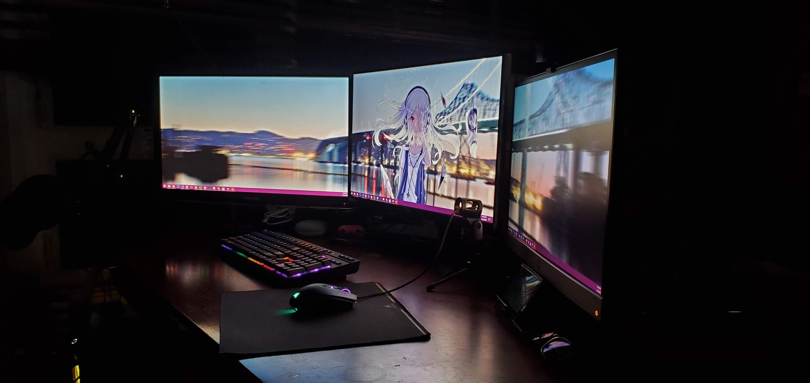

Dramatic Monologue
Alright. The Struggle.
Myself as a person is quite introverted. Doesn't enjoy talking to people and is quiet. I pass the time by working with computers. Let me tell you, how computers have taught me a valuable lesson and can help form my cultural identity. (I think this may go over your head, but people who have built a computer before may be able to relate. I'm weird okay!?)
You order everything off Amazon, that you need to start the build. When the parts come in, you get this irresistible feeling that can only be described as the unavoidable urge to build. You take everything out of the box, and ecstatically place your components on the table. Right when you're about to being building, something's missing. The case. Literally, the only thing that you need to start the build! Memory? Who cares! Hard drive? Oh well! Of all things, the case. The stupid thing that you can't build without! Let's put this into perspective. Imagine that you're eating at a salad bar. You have everything. Fruits, Vegetables, and a crap ton of dressing choices, but no plates or bowls. What the crap?!
Your missing part finally arrives in the mail, and you slap everything together. You spend HOURS working on cable management to make your computer look nice. There is no going back now. To remove a single component, you'd have to undo all your hard work, and that would be hours of effort and patience sent to the fire. You finish and plug in your computer to the outlet. You press the power button, as you become so excited that you can hardly contain yourself. *silence* Nothing happens. Nothing turns on. No spinning fans. No flashy lights. Just darkness. Your heart sinks. You wonder what you've done wrong. You panic, as your heart rate skyrockets. You begin doubting yourself. You start looking around your computer, trying to figure out what the hell happened. You find it, and you just want to shoot yourself. You forgot to turn on the power supply. You relax, and try to regain your emotions. You press the power button again. *silence* Nothing happens… Again. Just darkness… Again. You turned on the power supply! What happened?! You spend another 2 hours troubleshooting, to figure out which part came DOA (Dead on arrival). You isolate it to the one component that's a pain to remove. The motherboard. Why couldn't it have been the graphics card? That's easy to remove. The memory? No problem! The CPU? Oh well! But of all things, the Motherboard. The single hardest thing to remove. The board that requires you to remove everything. Is dead. It's almost as if your computer just grew a hand and stuck the finger right at you. You become so angry, as to wanting to nuke North Korea. Unwillingly, you undo all your hard work. You issue an RMA, and box it up. Drive down to your FedEx. Then wait. Oh wait, It's the weekend. It won't be shipped till Monday!
You wait, the RMA completes, you get the part. Reassemble everything. Power it up. Install your OS. Deep down inside. You make a promise to yourself saying you will NEVER do it again. Let's be honest. That isn't going to happen. You struggled, you conquered. That feeling of accomplishment and achievement, in the end, is worth it. It taught you, that no matter the challenge, everything is possible.